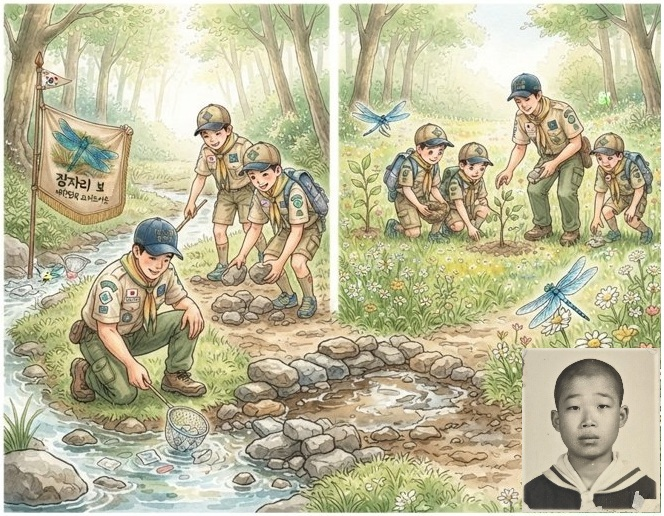

1973년 내가 삼죽국민학교 6학년때 학교에서 보이스카웃을 만들었다. 보이스카웃은 깔끔한 제목을 입고, 마후라 같은 것을 링을 끼워 두르고, 인사도 세 손가락으로 거수 경례를 하는 등 보기에 아주 멋져 보였다. 학생들 중에서 자유롭게 참가자 지원을 받았고, 나도 부모님의 허락하에 지원을 했다. 인원이 정해져 있어 지원을 한 어린이 중에 선발을 해야 했는데, 눈을 감고 30초 시간에 손을 드는 문제였다. 대부분 시작하자마자 손을 드는 소리가 막 났고, 나는 시간이 안되었다고 생각하면서도 다른 애들이 다 든거 같아서 좀 미리 들었다. 손을 너무 미리 든 애들이 많아서인지 어쨌든 나는 선발이 되었다. 선발된 보이스카웃은 모두 총 25명 정도 되었고, 어린이들은 다시 5개의 그룹으로 나누어, 각각의 그룹을 ’보’라 하였다. 같은 보이스카웃을 했던 동창 친구 영헌이가 말하길, 우리반 다른 친구 영홍이도 지원했는데, 영홍이 여동생이 것스카웃에 선발되어 한 집에 두 명 선발을 안하기로 했다면서 영홍이가 떨어져서 많이 울고불고 했다고 나중에 얘기를 했었다. 영홍이는 나랑 우민이와 함께 가장 친한 삼총사였다.
우리 보는 5보였고, 우리 보에서 내가 6학년이고 다른 애들은 3-5학년이라 내가 보장이 되었고, 우리의 보에 대한 보명과 보가 등을 정하게 되었다. 나의 담임 선생님이시도 하셨던 남자 보이스카웃 지도 선생님은 보명을 사나이답게 씩씩한 이름으로 하고, 보가도 역시 씩씩한 군가에 가사만 새로 짓도록 지도 하였으나, 우리의 보 이름은 별로 씩씩하지 않은 잠자리보라 지었고, 보가도 부드러운 행진곡 수준으로 내가 직접 작사 및 작곡을 하였다. 노란 깃발에 귀여운 잠자리 몇 마리를 그렸고, 잠자리보 글자도 크게 써 넣어 들고 다녔다. 다른 조들은 선생님의 조언대로 군가에 가사만 새로 붙여 만든 씩씩한 노래 위주로 다 만들었다. 지도 선생님은 우리보의 보명, 특히 보가를 못마땅하게 여기면서, 좀더 씩씩한 것으로 바꿀 것을 종용하였다. 그런데, 걸스카웃을 지도하던 보조 여선생님께서 우리 보가가 너무 좋다고 남자 지도 선생님께 허락해달라고 얘기해주는 덕분에 우리 보 이름과 보가를 계속 사용할 수 있었다. 그때의 보가는 지금은 기억이 안 나지만 대략 다음과 같은 내용을 갖고 있었다. ’여기저기 날아다니면서, 하루에 한가지씩 착한 일을 하는 우리 잠자리보~’ 보명과 보가를 정하고 외우기 위해 같이 모여 노래하던 보원들이 누군지 궁금하다.
6학년 담임 선생님은 초임 2년차였는데 완전 무섭고 한마디로 거침이 없었다. 나는 반장이었는데, 자기 하숙집에 가서 옷을 가져오라 심부름도 시키고, 다른 애들 때린다고 나에게 몽둥이를 찾아오라 시키고, 땡볕에서 운동회 곤봉 연습을 할 때, 내가 지금으로 치면 일사병에 걸린 건지 너무 어지러워 줄을 잠시 잘못 맞췄던것 같은데, 반장새끼가 틀렸다고 공중 점프로 나를 발로 차는 바람에 나는 하릴없이 운동장에 쓰러졌다. 이때도 다른 여선생님이 나에게 달려와 선생님을 말리며 애가 어디 몸이 안좋은가보다고 얘기하고 나에게 밖에 그늘에서 좀 쉬다 오라고 해 주셨고, 나는 나무 밑 그늘에서 쉬다가 정신차리고 다시 합류하여 연습을 계속한 적이 있었다.
스카웃 활동 중에 기억이 나는 것은 미지의 목표 지점을 찾아가기. 숨겨 놓은 여러 돌, 기호 등의 표식을 찾아서 목표 지점에 찾아가는 것인데, 어쨌든 우리 보가 표식을 찾기도 하고, 들에서 일하시는 할아버지께 물어가며 목표 지점에 도착한 기억이 있다. 그 때의 목표 지점은 학교 근처 안성 삼죽면의 중앙에 있는 국사봉이었다. 모든 보이스카웃 및 걸스카웃 학생들이 국사봉에 모여서 어떻게 찾아 놨는지를 설명하였는데, 내가 이리저리해서 우리보가 여기를 제대로 잘 찾아왔다고 설명을 하였고, 별로 잘 한것 같지는 않은데, 일하는 할아버지에게 물어보고 할아버지의 말을 흉내내고, 찾아오는 과정을 설명하는 장면에서 많은 웃움과 박수를 받은 것 같았다.
다음으로 1973년 여름 안성 대림동산에서 열린 잼보리 대회에 참가한 것인데, 여러 학교의 보이스카웃, 걸스카웃 들이 한데 모여 대회를 했는데, 많은 스카웃들이 모인 비교적 큰 대회였던 것으로 기억한다. 단체로 여러 노래도 배우고 함께 부르며 다양한 행사도 했는데, 초등학교 동기생 중에 작은 친구 문기철이가 행사장 내에서 활동하다가 무릎을 예리한 부분에 찍혀서 부상을 입어 먼저 귀가했던 기억이 있다. 어느 행사 도우미분께서, 우리 그룹 행진을 한 다음에 땀이 나서 우리 모두의 등에 물을 끼얹어 주었는데, 다른 애들은 엎드려서 시원하게 잘 했는데, 나는 익숙하지 않아 깜짝 놀라 바로 일어서서 끝내버린 기억이 있다. 나는 물을 무서워하는 경향이 있어서, 나중에도 처음 샤워할 때도 어려워서 숨을 잘 쉬지 못하고 샤워를 잘하지 못한 기억이 있다. 물론 바로 등목이나 샤워에 익숙해지기는 했지만, 처음에는 좀 그랬다. 그밖에 보이스카웃에 대한 여러 가지 일이 있었겠지만, 다른 기억이 또 없어 아쉬움이 남는다.
초기에 잠깐 활동을 했다가 아마 잼보리 대회 이후로 별로 활동이 없었던 것 같기도 하다. 대신, 보이스카웃 기간 동안 노래는 많이 배운 것 같다. 약간의 AI 도움을 받아 잠자리보가를 그때의 그 느낌으로 만들어 보았다.
[잠자리보가]
오늘도 씩씩하게 바람타고 날아가는 우리 잠자리보~
어디서든 도움의 손길위해 달려가는 우리 잠자리보~
하루에 한가지씩 착한일을 실천하는 우리 잠자리보~
작은날개 함께하며 따듯한 맘전하는 우리 잠자리보~
희망의 내일따라 온세상을 밝혀주는 우리 잠자리보~
[어린 송아지]
어린 송아지가 큰 솥 위에 앉아 울고 있어요 엄마 엄마 엉덩이가 뜨거워
어린 송아지가 얼음 위에 앉아 울고 있어요 아빠 아빠 엉덩이가 차가워~
[잼보리]
잼버리 잼버리 잼버리 잼버리 잼버리 잼버리 아하하 하하하하하하
잼버리 잼버리 잼버리 잼버리 잼버리 잼버리 아하
노래해 노래해 노래해 노래해 노래해 노래해 아하하 하하하하하하
노래해 노래해 노래해 노래해 노래해 노래해 아하
웃어라 웃어라 웃어라 웃어라 웃어라 웃어라 아하하 하하하하하하
웃어라 웃어라 웃어라 웃어라 웃어라 웃어라 아하
[악어떼(정글숲)]
정글숲을 지나서 가자 엉금엉금 기어서 가자 늪지대가 나타나면은 악어떼가 나올라 악어떼
[야자빠자노쟈]
야자빠자노쟈 야자빠자노쟈 에베사 데베사 드라마세데
야자빠자노쟈 야자빠자노쟈 에베사 데베사 드라마세데
세라베라게세 아빠쟈 세라베라게세 아빠쟈
야자빠자노쟈 야자빠자노쟈 에베사 데베사 드라마세데
[당신은 누구십니까]
당신은 누구십니까 나는 예쁜이 그 이름 참 좋구나
당신은 누구십니까 나는 멋쟁이 그 이름 참 좋구나
당신은 누구십니까 나는 *** 그 이름이 *** 같구나
당신은 누구십니까 나는 *** 그 이름이 *** 같구나
[도미니끄]
도미니크 니크니크 모두 즐거워라 아름다운 꿈나라
바닷가에 물새 소리가 들려오고 푸른물결 춤추네
숲속에는 북소리 피리소리 들리네
도미니크 니크니크 아름다운 꿈나라
도미니크 니크니크 모두 즐거워라
아름다운 꿈나라 천사들이 무지개 타고 오시네
합창소리 들리네 속세에서 맺은사랑 잊을길이 없어서
도미니크 니크니크 아름다운 노래 불러요
도미니크 니크니크 모두 즐거워라
아름다운 꿈나라 천사들이 무지개 타고 오시네
합창소리 들리네
[오 브레넬리]
오 브레넬리 당신집은 어디입니까?
네, 우리 집은 저 스위스랜드 맑은 호숫가
야호 호트랄랄라 야호 호트랄랄라
야호 호트랄랄라 야호 호트랄랄라
야호 호트랄랄라 야호 호트랄랄라
야호 호트랄랄라 야호호
[내게 강 같은 평화]
내게 강 같은 평화, 내게 강 같은 평화 내게 강 같은 평화, 넘치네. 할렐루야
내게 강 같은 평화, 내게 강 같은 평화 내게 강 같은 평화, 넘치네.
내게 바다 같은 사랑, 내게 바다 같은 사랑 내게 바다 같은 사랑, 넘치네. 할렐루야
내게 바다 같은 사랑, 내게 바다 같은 사랑 내게 바다 같은 사랑, 넘치네.
내게 샘솟는 기쁨, 내게 샘솟는 기쁨 내게 샘솟는 기쁨, 넘치네. 할렐루야
내게 샘솟는 기쁨, 내게 샘솟는 기쁨 내게 샘솟는 기쁨, 넘치네.
[오 나의 작은 나그네여]
오 나는 약한 나그네요 이 슬픈 세상을 가며
수고도 병도 위험도 없는 내가 가는 저 밝은 곳
나는 가네 내 아버지께 더 이상 방황 없는 곳
나는 가네 십자가 앞에 주님 품에 돌아가네
[원숭이 똥구멍은 빨개]
원숭이 똥구멍은 빨개
빨가면 사과 🍎
사과는 맛있어 😋
맛있으면 바나나 🍌
바나나는 길어 〰
길으면 기차 🚄
기차는 빨라 💨
빠르면 비행기 ✈
비행기는 높아 ☁
높으면 백두산 ⛰
이 노래를 응용해서 딸이 비탈에서 넘어져 놀리면서 만든 노래가 있다.
비탈에서 뛰면 위험해
비탈에서 뛰면 넘어져
넘어지면 무릎이 까져
까지면 쓰리고 아퍼
아프면 울어
물면 눈물이 나
그리고 상처에서 피나
피나면 딱지 생겨
딱지 생기면 가려워
긁으면 딱지 떨어져
떨어지면 상처자국 나
자국나면 보기 싫어
시간지나면 아물어
아물면 또 잊어버려
잊어버리고 또 뛰어
뛰다가 또 엎어져
이번에는 팔꿈치도 까져